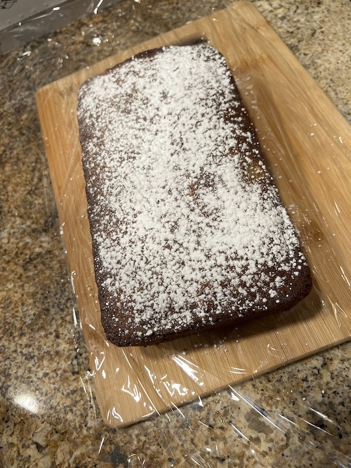

Kona Banana Bread

Soft and scrumptious morning treat
Mom's recipe for banana bread is one for the books! Dense and rich,
it takes enjoying bananas to another level.
Ingredients
- 1/2 cup butter
- 1 cup sugar
- 2 eggs
- 3/4 cup mashed ripe bananas
- 1 1/4 cups cake flour (or any flour on hand)
- 3/4 tsp baking soda
- 1/2 tsp salt
- 1/2 cup mini chocolate chips
Instructions
- Preheat oven to 350 degrees.
- Cream the butter with the sugar until light and fluffy.
- Add eggs, 1 at a time, beating well after each.
- Stir in mashed ripe bananas.
- Sift together flour, baking soda, and salt; add to banana mixture.
- Add in mini chocolate chips.
- Mix until well blended.
- Bake in 9x9x2 inch pan for 30-35 min or a loaf pan for 45 min.